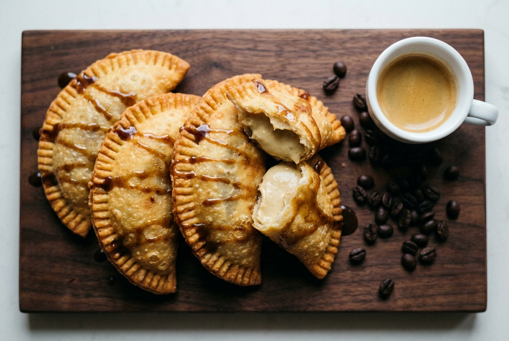
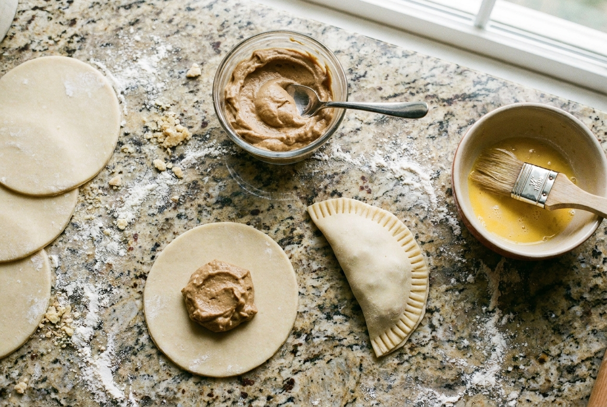
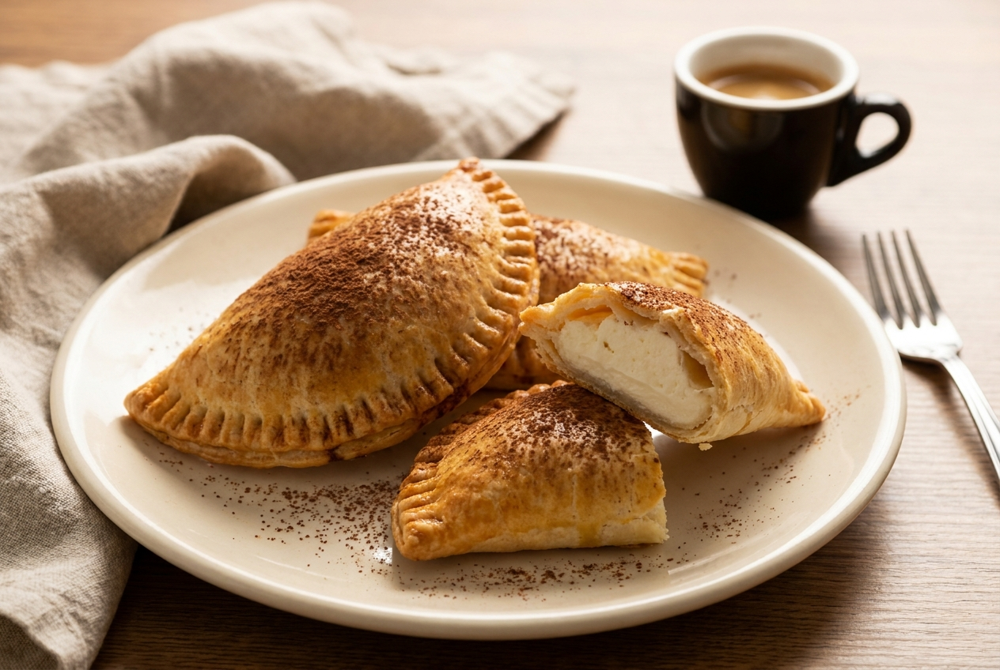

Crispy half-moon hand pies with a cold espresso cream filling and an espresso glaze. Same idea as the Taco Bell dessert empanada, but coffee.
Makes 6
About 1 hour, mostly chilling
Fry or bake

What you need
Dough
6 store-bought 5" empanada discs (Goya Baking & Frying discos, freezer aisle, the white ones, not the orange annatto ones)
Or homemade
1½ cups flour
1 tbsp sugar, ½ tsp salt
6 tbsp cold butter, cubed
1 egg + 2 to 3 tbsp ice water
Espresso cream filling
4 oz cream cheese, softened
3 tbsp powdered sugar
1 tbsp espresso, cooled (one pull, use the rest for the glaze)
½ tsp vanilla, pinch of salt
Glaze
½ cup powdered sugar
1 tbsp espresso, pinch of salt
Also
1 egg, beaten (egg wash)
Oil for frying, or nothing extra to bake
Steps
Make the dough (skip if using discs).Mix flour, sugar, salt. Cut in the cold butter until it looks like coarse crumbs. Add the egg and just enough ice water to hold together. Flatten into a disc, wrap, fridge 30 minutes. Roll to ⅛", cut 5" circles (a small bowl works as a cutter). Thaw store discs in the fridge instead.
Make the filling.Beat cream cheese, powdered sugar, espresso, vanilla, and salt until smooth.
Freeze it into dollops.Scoop 6 heaping tablespoons onto parchment and freeze 20 minutes. Frozen filling doesn't squish out the sides when you crimp, and it won't leak in the oil.
Assemble.One frozen dollop in the center of each disc. Brush egg wash around the edge, fold into a half-moon, press out the air, crimp with a fork.
Fry or bake.Fry: oil at 350°F in the Dutch oven, 2 or 3 at a time, about 2 to 3 minutes per side until deep golden. Drain on a rack. Bake: brush tops with egg wash, poke a small vent with a knife, 400°F for 15 to 18 minutes on parchment.
Glaze.Whisk powdered sugar, espresso, and salt. Let them cool 5 minutes, then drizzle. The filling is molten right out of the oil.

Filling in the center, egg wash on the edge, fold, fork-crimp.
Fry tip: few at a time so the oil stays at 350°F. Crowding drops the temp and they come out greasy instead of crisp. Double-frying works here too: 2 minutes at 325°F, rest, then 1 minute at 375°F.
Leak check: if one opens up while frying, the edge wasn't sealed. More egg wash, press harder, crimp deeper.
Tiramisu version

Swap the filling for 4 oz mascarpone, 2 tbsp powdered sugar, and 1 tbsp espresso. Bake instead of fry, skip the glaze, and dust heavily with cocoa powder while warm.
Other swaps
Mocha: add 1 tbsp cocoa powder to the filling.
Cinnamon sugar: skip the glaze and toss them hot in ¼ cup sugar + 1 tsp cinnamon.
Make ahead: freeze assembled, uncooked empanadas on a tray, then bag them. Fry or bake straight from frozen, adding a minute or two.